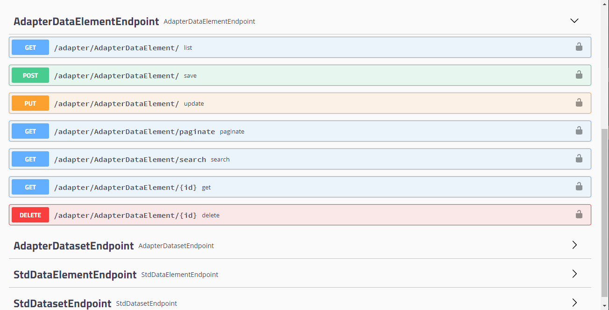

背景
刚接触Jfinal时就对ActiveRecord印象深刻，但公司整体使用SpringBoot框架，使用不多，但一直保持着关注。当Jfinal推出Model生成器，SQL管理和动态生成之后，拿了个项目来练手，找到了淋漓尽致的感觉，惊呼顺畅。如果你使用过Spring Data JPA，只要一对比，你会发现过多的封装就是在挖坑。哦对，就是那个KISS(Keep it Simple and Stupid)原则，异或奥卡姆剃刀原理（如无必要，勿增实体），概念越多，越复杂，越手足无措。回归本质你会得到更多，是的Less Is More。而此时公司项目正在进行一次代码重构，在SpringBoot框架不变的前提下（体系相对完善，有积累），如果能集成Jfinal的ActiveRecord快速搞定增删改查，开发就会变得更简单。是的，我们还在开始使用Kotlin，也是遵循简单，快速原则。
我把整个的集成过程称为SpringBoot和Jfinal的合体，主要分为3部分1.集成ActiveRecord，2.实现代码生成。3.使用方式。
集成ActiveRecord
参考Jfinal的官方文档独立使用ActiveRecord。代码如下：1
2
3
4
5
6
7
8
9
10
11
12
13
14
15public class ActiveRecordTest {
public static void main(String[] args) {
DruidPlugin dp = new DruidPlugin("localhost", "userName", "password");
ActiveRecordPlugin arp = new ActiveRecordPlugin(dp);
arp.addMapping("blog", Blog.class);
// 与 jfinal web 环境唯一的不同是要手动调用一次相关插件的start()方法
dp.start();
arp.start();
// 通过上面简单的几行代码，即可立即开始使用
new Blog().set("title", "title").set("content", "cxt text").save();
Blog.dao.findById(123);
}
}
我们可以看到，基本上是可以直接使用，在SpringBoot的中，我们只要把ActiveRecordPlugin用一个Bean对象的方式来创建就可以了。
于是，有如下代码（当然还有一些配套工作，这里省略了）：1
2
3
4
5
6
7
8
9
10
11
12
13
Public ActiveRecordPlugin activeRecordPlugin() {
DruidPlugindruidPlugin = druidPlugin();
druidPlugin.start();
ActiveRecordPluginarp = new ActiveRecordPlugin(druidPlugin);
arp.setTransactionLevel(Connection.TRANSACTION_READ_COMMITTED);
arp.setShowSql(false);
arp.getEngine().setSourceFactory(newClassPathSourceFactory());
return arp;
}
实现代码生成
IDEA可以为JPA后成Entity实体类代码，如果了解Groovy，还可对生成的代码进行一些调整。而Jfinal在框架上就提供了Model的自动生成，对于表更新比较频繁时非常好用。然后查看了下Jfinal的代码生成逻辑，发现了更多的可玩性，于是就不满足于只生成Model了，我们可以通过Jfinal的Enjoy模板引擎，生成基于整个数据库的整个Module（这里指MVC，而非整个工程，工程可通过IDEA的SpringBoot向导来创建），同时为单表提供基本的增删改查（单个查询和分页查询）等基础接口。“有表就有服务”，就是这样简单，之后我们可以更专注于复杂业务逻辑的开发。
代码生成逻辑主要分为代码目录结构设计，代码生成逻辑和代码模板修改。
目录结构
SpringBoot的一个原则，是约定大于配置，而微服务架构也强调统一原则，所以必要的目录结构设计或者规范是需要的。
- 所有Model统一放在common/model下。
- 按业务名优先原则，也就是”业务名/controller”，”业务名/serivce”的方式。
- 以ModelNameEndpoint，ModelNameService方式来命名。
代码逻辑
生成代码的逻辑，主要过程生成Model（同时建构业务分组表信息），生成通用SQL模板，根据不同业务生成Controller和Serivce。我的做法是把Jfinal里面的BaseModelGenerator拷贝出来，做为自己的基类，为不同的模块生成不同的子类，做简单的目录规划和生成模板的调整就可以了，这部分逻辑不复杂。1
2
3
4
5
6
7
8
9
10
11
12/**
*生成MVC
*/
Public void generate() {
generateModel();
genSql();
groupTables.forEach((groupName, dbTables) -> {
genEndpoint(groupName,phrMetaBuilder);
genService(groupName,phrMetaBuilder);
});
}
业务分组信息
我这里讲下业务分组信息的提取，继承MetaBuilder重写buildTableNames方法，除了供本生的Model生成，就是提取出来分组表信息，供Controller和Sevice生成器使用。1
2
3
4
5
6
7
8
9
10
11
12
13
14
15
16
17
18
19
20
21
22
23
24
25
26
27
28
29
30
31
32
Protected void buildTableNames(List<TableMeta> ret) throws SQLException {
if(groupTables == null || groupTables.size() == 0) {
super.buildTableNames(ret);
return;
}
ResultSet rs = getTablesResultSet();
Kv kv = Kv.create();
While (rs.next()) {
StringtableName=rs.getString("TABLE_NAME");
Stringremarks=rs.getString("REMARKS");
kv.set(tableName,remarks);
}
rs.close();
groupTables.forEach((group, tables) -> {
ArrayList<TableMeta> tableMetas = new ArrayList<>();
String[] tableList = tables.split(",");
for (Stringtable Name : tableList) {
TableMetatableMeta = new TableMeta();
tableMeta.name = tableName;
tableMeta.remarks = kv.getStr(tableName);
tableMeta.modelName = buildModelName(tableName);
tableMeta.baseModelName = buildBaseModelName(tableMeta.modelName);
tableMetas.add(tableMeta);
}
ret.addAll(tableMetas);
groupTableMeta.put(group,tableMetas);
});
}
代码模板
代码模板基本的实现方式就是通过一个工程，书写出来实际可用的代码，之后改成.jf。放到模板路径下。同时根据表信息，调整模板内容。其间不断的生成加修改就好。这里只截取部分代码。
使用方式
创建工程
使用IDEA向导创建SpringBoot工程，注意使用Maven（Gradle的父POM配置方式还没搞定），调整POM文件（如引入父POM，增加依赖等）。
生成代码
在生成的Test目录，增加如下代码，运行生成代码。1
2
3
4
5
6
7
8
9
10
11
12
13
14
15
16
17
18
19
20
21
22
23
24(SpringRunner::class)
@SpringBootTest
class SvrPhrApplicationTests {
private val phrModuleGenerator: PhrModuleGenerator? = null
@Test
fun contextLoads() {
}
@Test
fun genModule() {
phrModuleGenerator?.setBasePackageName("com.jkzl.phr.phr")
?.addGroupTables("adapter",
"adapter_data_element," +
"adapter_dataset")
?.addGroupTables("standard",
"std_dataset," +
"std_data_element")
?.setKotlin(true)
?.generate()
}
}
启用ActiveRecord
通过实现CommanLineRunner接口，在ActiveRecordPlugin Bean对象创建，设置SQL模板，关联Model并启动。代码如下：1
2
3
4
5
6
7
8
9
10
11
12
13
14
15
16
17
class SvrPhrApplication : CommandLineRunner {
Override fun run(vararg args: String?) {
if(arp != null) {
//代码生成后增加
arp.addSqlTemplate("/sql/all.sql")
_MappingKit.mapping(arp)
arp.start()
} else {
throw NullPointerException("arpisnull")
}
}
@Autowired
Private val arp : ActiveRecordPlugin? = null
}
运行
启动项目，我们就可以通过Swagger来查看微服务提供的基础服务了。

小结
虽然生成代码模板还在改进之处，多次生成代码覆盖问题没有解决，但重要的是，我们已经起步了，同时通过集成Jfinal的ActiveRecord，吸收Jfinal的Model代码生成，让Springboot开发更简单，而使用Kotlin又简化了一些Java的复杂性。之后你会感叹，居然开发可以如此简单。借Jfinal的口号“为您节约更多时间，去陪恋人、家人和朋友 :)”来结束本文。
参考资料
[1]Jfinal官网